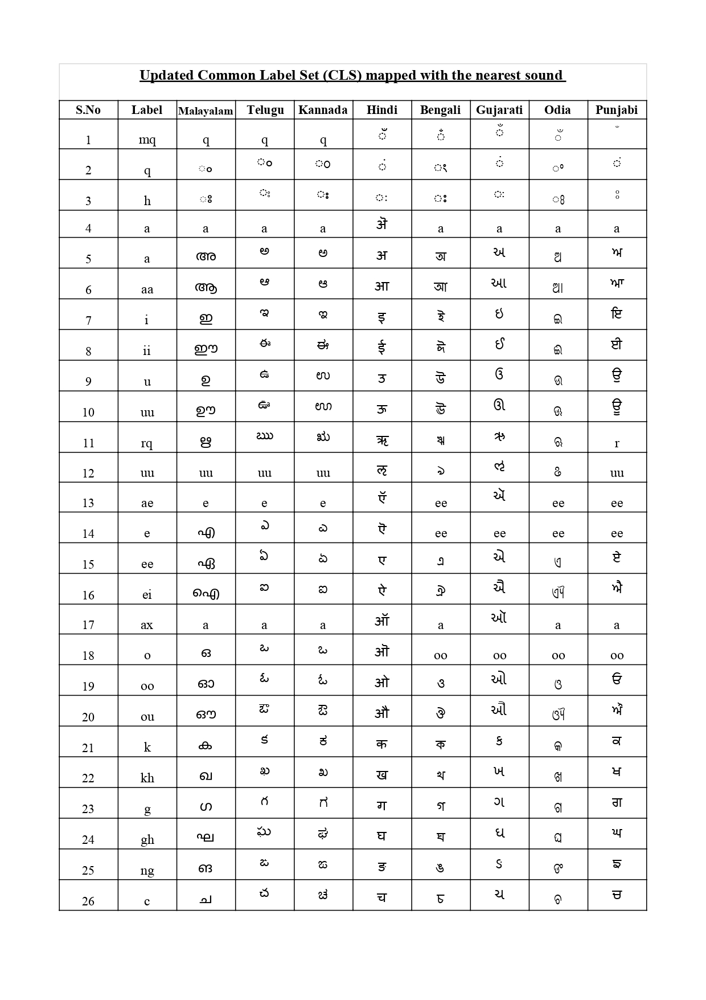
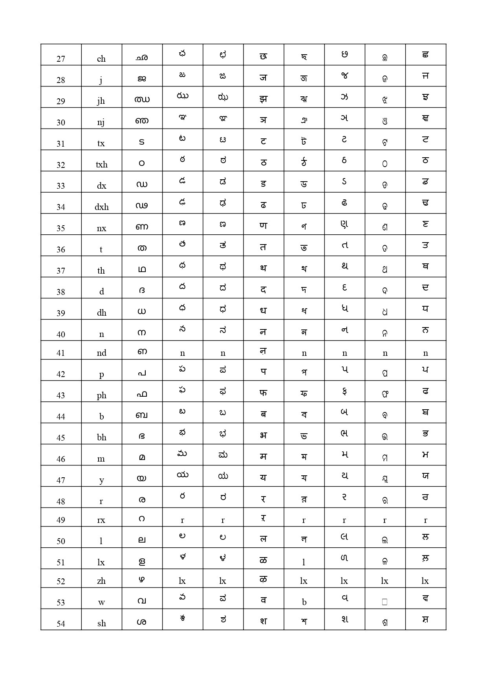

Multilingual Story data
These are examples of multilingual speech audio used in our experiments.
Common Label Set Mappings
Common label set has been augumented for the missing sounds.
 Sample 3: Ambient Sound Example
This audio sample showcases ambient sounds that were crucial for our environmental analysis.